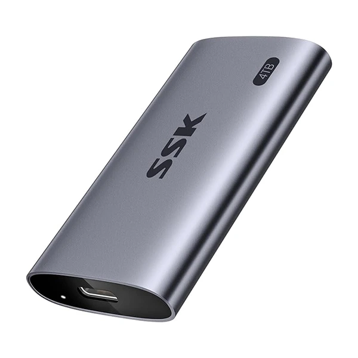
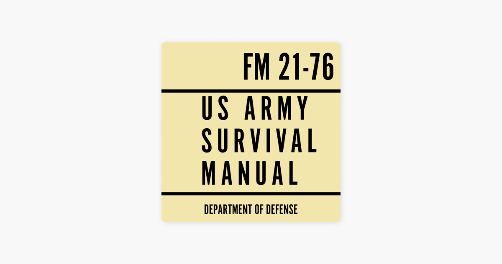
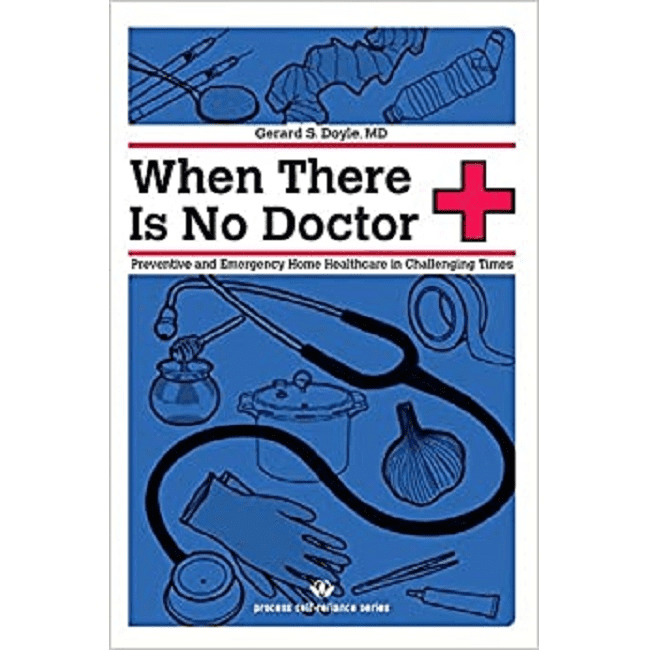
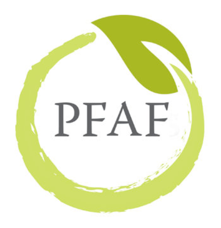
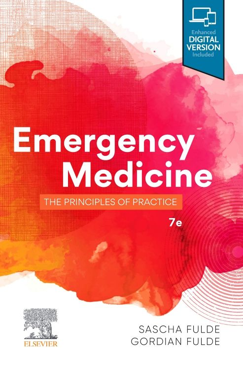

Off-Grid Knowledge Repository

1TB+ Portable SSD (required)
Wikipedia & Simple English Wiki
WikiHow (step-by-step guides)
OpenStreetMap & offline maps
Project Gutenberg essentials
Survival & Self-Sufficiency

Wikibooks Survival & US Army FM 21-76

Where There Is No Doctor/Dentist

Plants For A Future (7000+ plants)
FAO E-Books & Resilient Gardener
Ham Radio & Mesh Networking Guides
DIY & Repair Knowledge
StackExchange archives (Kiwix)
Open Source Ecology wiki
Practical Electronics for Inventors (The F students)

WHO Emergency Medicine Manuals